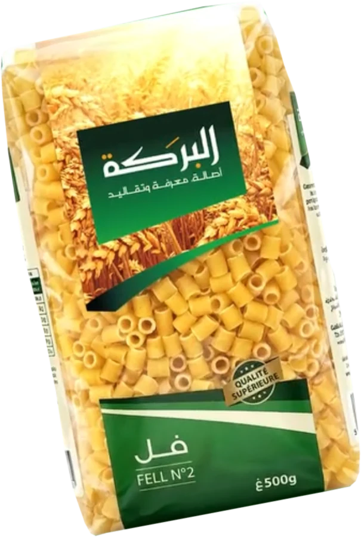
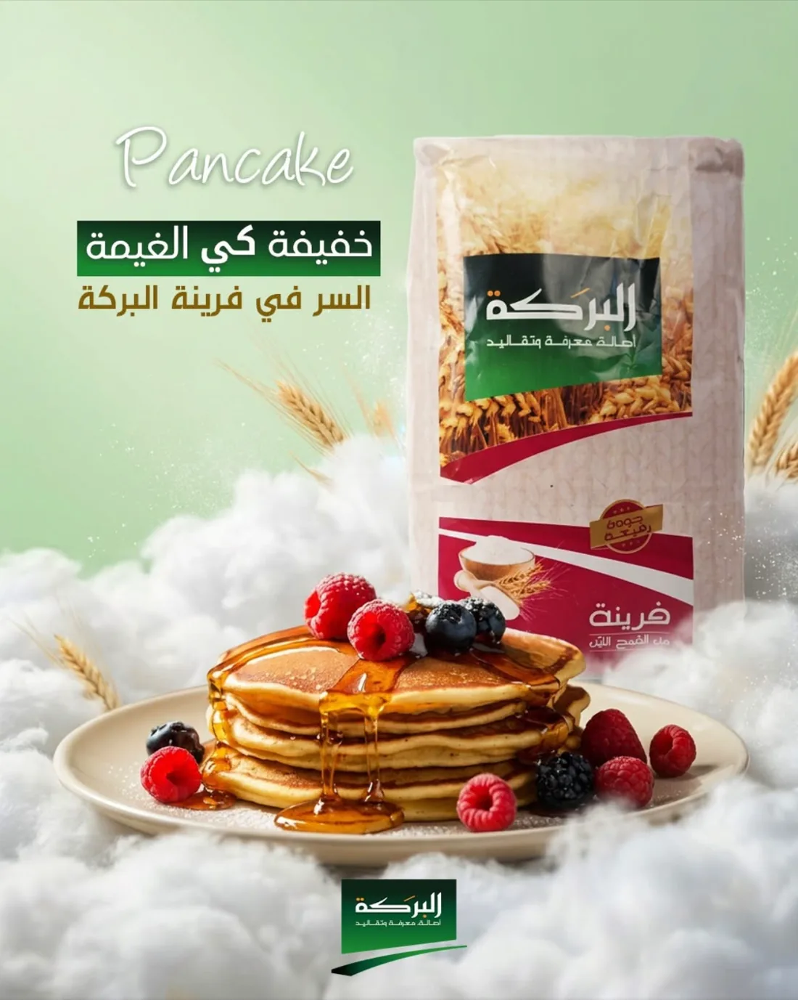
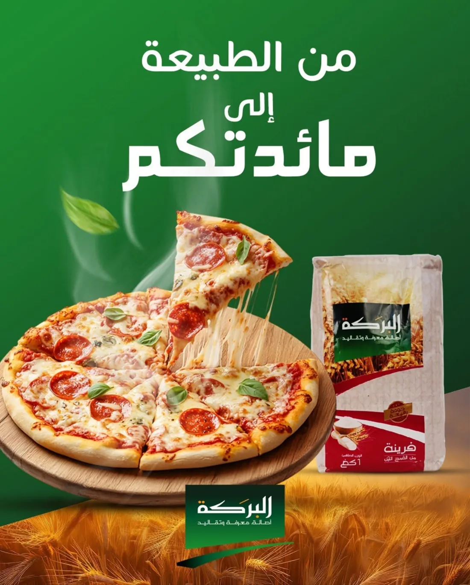

Le couscous du vendredi
Couscous moyen, légumes de saison et pois chiches, pour toute la famille.
أصالة، معرفة وتقاليد
Des produits de qualité supérieure, fabriqués en Algérie, pour la cuisine de tous les jours comme pour les grandes tablées du vendredi.

Du grain de blé au paquet, la même recherche de qualité sur chaque référence.
Le paquet que vous retrouvez déjà dans votre panier.
Choisissez le plat et le nombre de convives, on calcule la quantité et le nombre de paquets.
البركة تجمعنا
Les idées de recettes partagées chaque semaine sur notre page.
من الطبيعة إلى مائدتكم
Couscous moyen, légumes de saison et pois chiches, pour toute la famille.

خفيفة كي الغيمة
Le secret : la farine El Baraka.

Une pâte souple et dorée, faite avec la farine de blé tendre.
La recette préférée de nos abonnés.

Superettes, grossistes, restaurateurs : demandez nos conditions professionnelles et le catalogue complet de la gamme.
Devenir revendeur